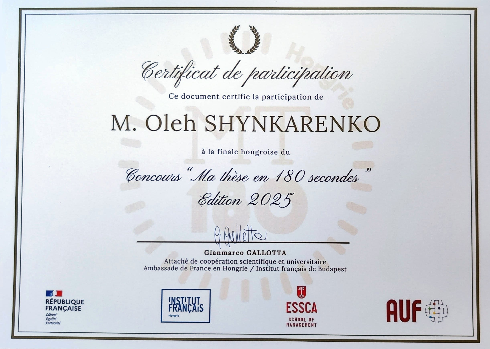

Моя участь у MT180 – Національний фінал 2025¶
Що таке MT180?¶
Ma Thèse en 180 Secondes (MT180) — міжнародний франкомовний конкурс, натхненний Three Minute Thesis (3MT®), розробленим Квінслендським університетом в Австралії. Він дає аспірантам можливість представити тему свого дослідження — за три хвилини, французькою мовою та зрозумілою для широкої аудиторії мовою.
У 2012 році цей формат запровадила в Квебеку асоціація Acfas (Association francophone pour le savoir), і відтоді він поширився по всьому франкомовному світу.
Національний фінал MT180 відбувся 25 березня 2025 року.
Мій досвід¶
Мені випала честь стати одним із п'яти фіналістів Національного фіналу MT180 2025 року — усі ми мали різний академічний і культурний досвід:
- 2 учасники з Сирії
- 1 з Бурунді
- 1 з Угорщини
- І я сам
Моя дисертація присвячена історії та філософії української науково-фантастичної літератури, зокрема тому, як вона відображає інтелектуальну траєкторію європейського позитивізму — від техно-оптимізму до постмодерного песимізму.
Щоб донести цю складну й абстрактну тему за три хвилини, я перетворив свою дисертацію на франкомовний реп-виступ. Такий формат допоміг мені захопити аудиторію, викласти складні філософські ідеї простіше й поєднати ритм науки з ритмом розповіді.
Мій реп про дисертацію MT180¶
Yo! écoute bien, c'est l'histoire d'un Ukrainien,
Ma thèse ? La Science-Fiction, mon feu et mon lien.
Les étoiles, les machines et les mondes lointains,
Moi, petit gosse déjà, tu sais, je rêvais sans fin.
La Science-Fiction d'Ukraine et le positivisme
Avançaient un peu ensemble, comme le même organisme.
De techno-espoir aux désillusions,
Un rêve brisé, tu sais, la même chanson.
Ils rêvaient du ciel, d'un monde en lumière,
Mais la guerre a teint leurs vies en poussière.
Les bombes ont parlé, il n'y a plus d'idéal,
Le communisme? Bof! Juste un mirage fatal.
Comme le positivisme rêvant trop grand,
Auguste Comte disait : "Kant nous ment".
La science seule ? Pas ouf! C'était leur cri,
Mais même la science, au fond, s'est trahie.
Tous les cygnes sont blancs ? Vraiment ?
Un seul noir - et hop!-hop!-hop! - fini l'argument.
Lyotard, Foucault ont tout dynamité,
La vérité? Bof! Un mythe pour dominer.
Deux cents ans à chercher l'ultime vérité,
L'amour vrai, les vrais hommes et la sincérité.
Mais nul n'a compris ce que ça signifiait,
Que faire, que croire? Ah bon?! Et que murmurer?
Kant, Comte, Sartre, Foucault, et cætera,
Chacun son récit, chacun sa Torah.
J'donne pas de leçon. C'est pas mon rôle,
Le bonheur des uns fait le malheur des drôles.
À chacun son poison, chacun son destin,
Le monde est bien plus vaste qu'on l'imaginait. Fin!
Сертифікат¶
Участь у MT180 була не лише викликом у сфері наукової комунікації, а й можливістю поєднати академічну думку з творчим виступом. Представлення своєї дисертації у форматі репу — це спосіб відсвяткувати перетин науки, літератури та культури і довести, що навіть найскладніші ідеї можна передати чітко, з ритмом і душею.
